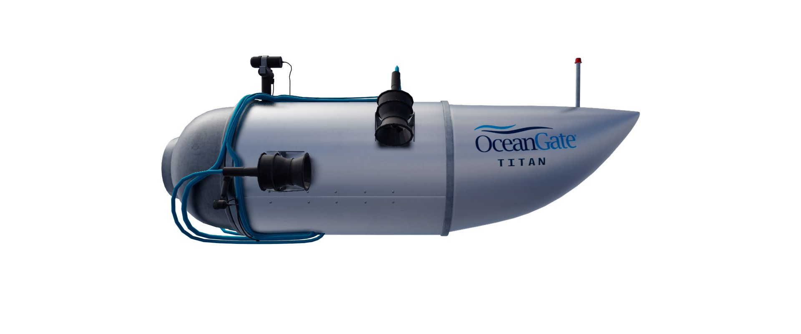

Cinco pessoas entram em um submarino para tentar chegar aos destroços do Titanic, para a primeira viagem de 2023.A empresa de turismo marítimo, OceanGate Expeditions, cobra US$ 250 mil (R$ 1,19 milhão) dos passageiros por um lugar em sua expedição para ver os destroços. Para ir até o local, uma grande embarcação saiu de Newfoundland, no Canadá, carregando a embarcação. Como o veículo não é autônomo como um submarino de grande porte, precisa ser carregado na superfície do mar por 643 km até a região onde estão os destroços.
Por volta das 8 horas, começa a descida até o Titanic. A expectativa era que levasse cerca de duas horas para chegar até o local. Porém, o submarino perdeu comunicação depois de uma hora e 45 minutos de descida.
A Guarda Costeira dos Estados Unidos anuncia por volta das 14 horas, que estavam "procurando por um submarino
de pesquisa canadense". Três horas depois, a instituição realizou uma coletiva de imprensa para afirmar que
estava "trabalhando muito" para localizar os viajantes.
Às 12h30, a OceanGate Expeditions se manifestou pela primeira vez. Em nota, disse que estava"explorando e
mobilizando todas as opções para trazer a tripulação de volta com segurança".
O primeiro viajante identificado foi Hamish Harding, um bilionário que é cofundador e presidente da Action
Aviation, uma empresa especializada em serviços de aviação e aeroespaciais.
No mesmo horário, mídias internacionais informaram que Paul-Henry Nargeolet também estaria no submarino.
O empresário paquistanês Shahzada Dawood e seu filho Suleman foram identificados na madrugada de terça-feira. A família do empresário emitiu um comunicado informando que ambos estavam na viagem subaquática. Por volta das 9 horas, as equipes que procuravam pelo submarino desaparecido anunciaram que ampliariam a área das buscas. A operação está sendo feita em conjunto pelas Forças Aéreas dos Estados Unidos e do Canadá. Às 11h40, a França Outro país que se aliou as buscas foi a França. O país vai enviar um navio, chamado Atalante, que é administrado pelo instituto de pesquisas Ifremer, e atua sob a alçada do ministério.